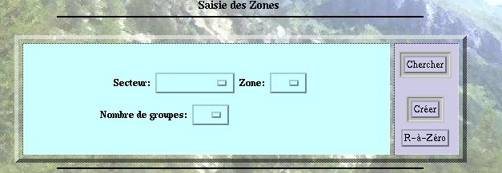
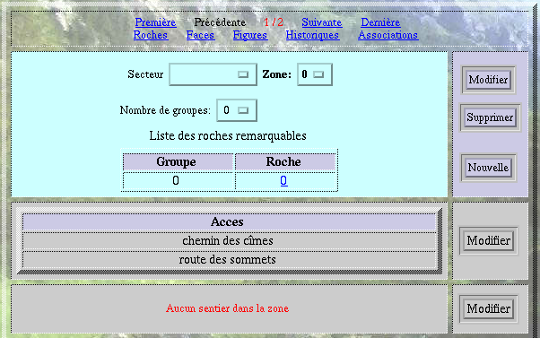
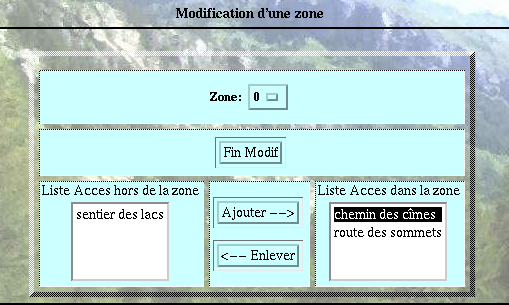

VI- LES ECRANS
2- L'écran Zones
2- L'écran Zones
Cet écran permet de saisir toutes les informations relatives aux zones.
 AVANT
LA SAISIE DE L'IDENTIFIANT:
Le seul champ obligatoire pour la saisie
est le champ Zone qui est la clef primaire de la table Zone.
AVANT
LA SAISIE DE L'IDENTIFIANT:
Le seul champ obligatoire pour la saisie
est le champ Zone qui est la clef primaire de la table Zone.

 APRES
AVOIR CLIQUE SUR CHERCHER OU CREER:
APRES
AVOIR CLIQUE SUR CHERCHER OU CREER:

Les liens en bleu permettent de se rendre directement sur les écrans correspondants à cette zone ainsi que sur la zone suivante.

Sélectionner les items à l'aide de la souris.
Cliquer sur le bouton Ajouter.Sélectionner les items à l'aide de la souris.
Cliquer sur le bouton Enlever.